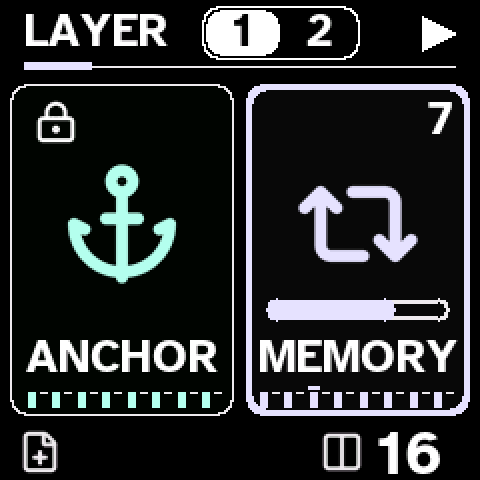
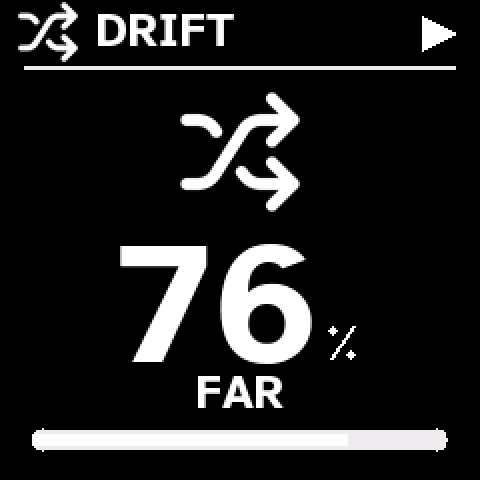
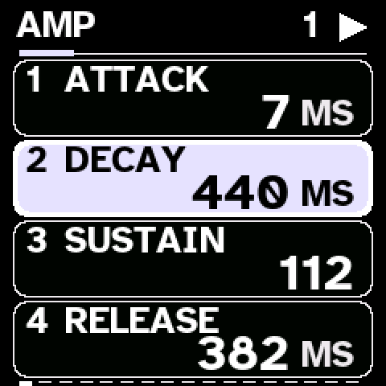
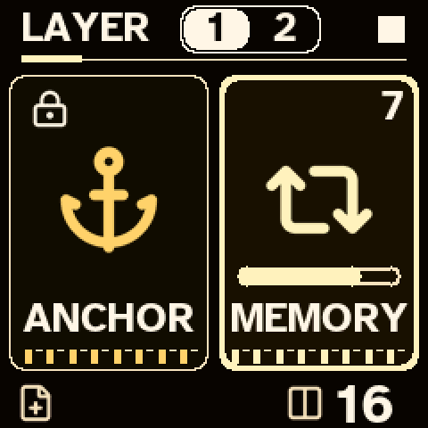

Wanderer 3.0 — the touch-first guide
From Low Vision Music. Wanderer is a four-voice synthesizer for the M-VAVE FM-1. You record a short phrase. Wanderer keeps the original safe as the Anchor, and lets a copy, called Memory, wander a little further every time the loop goes round.
This guide is written to be used with your hands on the instrument. Each section tells you where to reach, what you will hear, and what lights up. You do not need to read the screen to use Wanderer, but the screen helps: large words, thick bars and six colour themes.
1. Find your way
The keys
The FM-1 has 27 keys, low notes on the left. The first key is an F. Find the groups of two black keys: the white key just left of each pair is a C. On the Home screen every C key glows softly, so you can find them by sight as well as by touch. If you change the root note in Settings → Music, the keys for the new root glow instead.
Knobs
- Four numbered knobs in a row. On Home they are 1 MELT 2 DRIFT 3 SCATTER 4 LEVEL. In every menu, the four knobs change the four rows shown on the screen, top to bottom.
- PRESET: turn it to change the sound. In menus it moves to the next page.
- SELECT: turn it on Home to jump ten sounds at a time. In menus it moves the highlight.
- ALGORITHM: tempo, from 60 to 180 beats per minute.
The three buttons that always help
- HOME goes back one step. Hold it for one second to stop every sound.
- PLAY starts and stops. Its light flashes on every beat.
- ENV is Undo: it reverses your last change.
2. Your first loop
- Tap REC. The loop starts and recording begins. The REC and PLAY lights flash with the beat.
- Play a short phrase on the keys. One bar of 16 steps loops by default; notes snap to the nearest step.
- Tap REC again to stop recording. The phrase keeps playing.
- Play it again: anything you play while REC is on is added to the loop.
Made a mistake? Tap ENV to undo the take.
Want two bars? Settings → Music, knob 3 (Length) sets 16 or 32 steps (stop first).
3. Let it wander
This is the heart of 3.0. Turn 1 MELT and 2 DRIFT up a little. At the end of every loop, Memory changes slightly. The next loop changes a little more, and so on.
What you will hear
- Drift moves single notes up or down one step of the scale. At low settings the first beat and the root notes never move, so the tune keeps its shape. Turn it higher for wider movement and occasional octave jumps.
- Melt softens the in-between beats, lets notes run into each other, and drips a quiet echo, one step lower, into empty steps. The sound itself gets softer over several loops.
- Turn either knob down and Memory slowly comes back. With both at zero, every note returns home within a few loops.

Turning Melt, Drift or Scatter shows a large number and a word: for Drift, STILL, GENTLE, WANDERING or FAR.

4. Keep, Return, Compare
| Do this | What happens | You hear / see |
|---|---|---|
| Tap LFO | Compare. Listen to the Anchor. Tap again to go back. | LFO light is bright while you listen. |
| Tap GLO | Keep. The Memory you hear now becomes the new Memory. Wandering starts from here. | A high cue; the screen says KEPT. Undo with ENV. |
| Hold GLO about 1 second | Return. Memory goes back to what you recorded. | A falling two-note cue; the screen says BACK HOME. |
| Hold LFO 1.2 seconds (stopped) | Restore Anchor. Asks first; Memory becomes the Anchor again. | Tap SELECT to confirm, HOME to cancel. |
| Tap SAVE | Set the Anchor yourself from the current Memory (only if there is none yet). | The screen says ANCHOR SET. |
5. Sounds and layers
- Turn PRESET to choose from 150 sounds; turn SELECT to jump ten at a time. They are grouped in tens: leads, basses, keys, organs, brass and winds, strings, pads, plucks, mallets, bells and drums.
- Each sound now has its own Melt character. Leads and basses get darker, keys get rounder, pads and strings open up and widen, plucks and bells soften.
- Hold PLAY for two seconds to return to the first sound, Afterglow.
- Tap EDIT to shape the sound. The four knobs change the four rows; the row you are changing turns solid. Turn PRESET for the next page.
- Hold EDIT about one second to switch between Layer 1 (Memory) and Layer 2. The highlighted number at the top of Home is the layer you are playing and recording. Layer 2 does not wander. It stays steady under Memory.
- Velocity now changes tone: softer notes are darker. The FM-1 keys play at a steady, neutral velocity.

6. Scatter and effects
3 SCATTER on Home chops the sound into repeats, skips, reversals and pitched slices, in time with the loop. From quiet to loud: CLEAN, SPARSE, BUSY, WILD.
- In 3.0 a Scatter pattern repeats each loop, so it plays as a rhythm. In Edit, page Scatter Grid, knob 2 Variation sets how often a new pattern takes over: low keeps the same one, high changes it every loop.
- The first beat stays clean unless Scatter is very high, and the last steps of the loop get more gestures.
- Repeats fade like a real echo.
Effects are in Settings. Hold SEL and turn PRESET to reach Chorus, Delay, Reverb, Tape Echo, Phaser, Bitcrush and Wavefold. The 3.0 reverb is smoother and wider, and every type except Ambient fades fully to silence.
7. Screen, lights and sound cues
Make the screen easier to see
- Zoom: hold OCT+ for 1.5 seconds, or press HOME and EDIT together. Everything gets larger and keeps the same knob layout.
- Colour theme: hold OCT− for 1.5 seconds to switch to the next of six themes: Contrast, Dark, Light, Amber, Ocean, Violet. The theme name appears on screen.
- Reduced motion and display hold time: hold SEL for Accessibility, then turn PRESET one click to the right for Access Feel.

Lights
| Light | Meaning |
|---|---|
| PLAY flashing | The loop is running; bright on every beat. |
| REC flashing | Recording; bright on every beat. Solid while Print is armed or writing. |
| Keys glowing softly | Root notes (C unless you change the root). |
| Keys bright | Notes that are sounding. |
| GLO glow / flash | Something to Keep / Memory just moved. Bright during Scatter repeats. |
| LFO bright | Listening to the Anchor. A flash on the first beat means Memory is far from home. |
| SAVE bright | An Anchor is stored. |
| EDIT bright | Layer 2 is selected. |
| OCT− / OCT+ bright | The keyboard is shifted down / up. |
Sound cues
Short tones confirm actions: rising for on, falling for off; a higher tone for each menu row. In Access Feel, CUES sets Off, Actions or Full (Full adds tones at the ends and middle of each knob's range), and CUE LEVEL sets their volume. Cues are not recorded or printed.
8. Save and load
- Stop the loop with PLAY.
- Hold SAVE about one second (or tap SEQ). Turn SELECT to choose slot 1 to 8; each slot has its own cue pitch. The screen says EMPTY SLOT or OVERWRITE.
- Tap SELECT to save, or HOME to cancel.
To load, tap ARP, choose a slot, and tap SELECT.
9. Every control
| Control | Tap | Hold |
|---|---|---|
| PLAY | Start / stop | 2 s on Home: first sound (Afterglow) |
| REC | Record on / off | About 1 s: Print page (record audio into RAM) |
| SAVE | Set the Anchor | About 1 s: Save |
| LFO | Compare with the Anchor | 1.2 s, stopped: Restore Anchor |
| GLO | Keep the wander | About 1 s: Return home |
| ENV | Undo the last change (on the Print page: undo / redo the print) | — |
| EDIT | Edit the sound | About 1 s: switch Layer 1 / 2 |
| FX | Clear Layer 2 (asks first) | 1.6 s: New session (asks first) |
| SEQ | Save | — |
| ARP | Load | About 1 s: Arpeggiator settings |
| SEL | Settings, Music page | About 1 s: Accessibility |
| HOME | Back / cancel | 1 s: stop all sound |
| OCT− / OCT+ | Octave down / up | 1.5 s: next theme / Zoom |
| HOME + EDIT | Press together: Zoom on or off | |
| HOME + SEL | Press together: oscilloscope | |
10. If something goes wrong
- Too much is happening: hold HOME for one second. Every sound stops; your notes are safe.
- Memory has gone too far: hold GLO to Return, or turn Melt and Drift to zero and let it drift home.
- Unexpected message: every message has a word. Tap HOME or SELECT to clear it.
- The FM-1 will not start: hold OCT− while switching it on. This starts the USB rescue mode, where you can install 2.0 RC11 or the stock firmware again.
Source, changes and tests: CHANGES_3.0.md. Wanderer is GPL-3.0 software by Nicholas James / Low Vision Music. It is independent and not affiliated with M-VAVE.